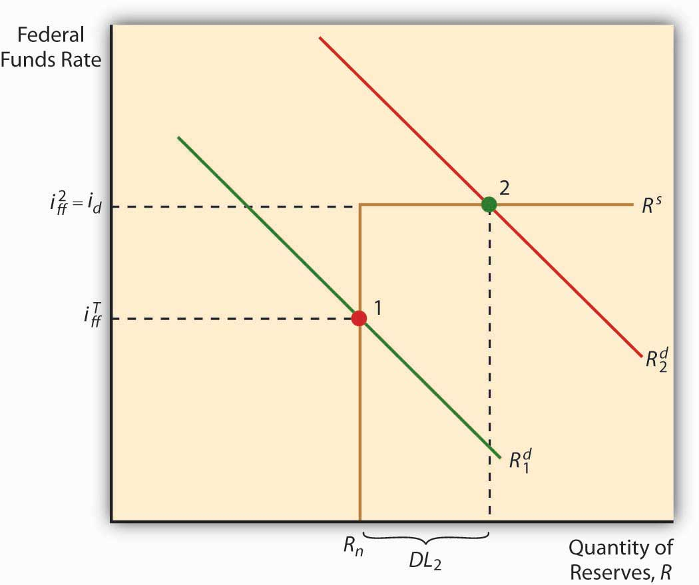
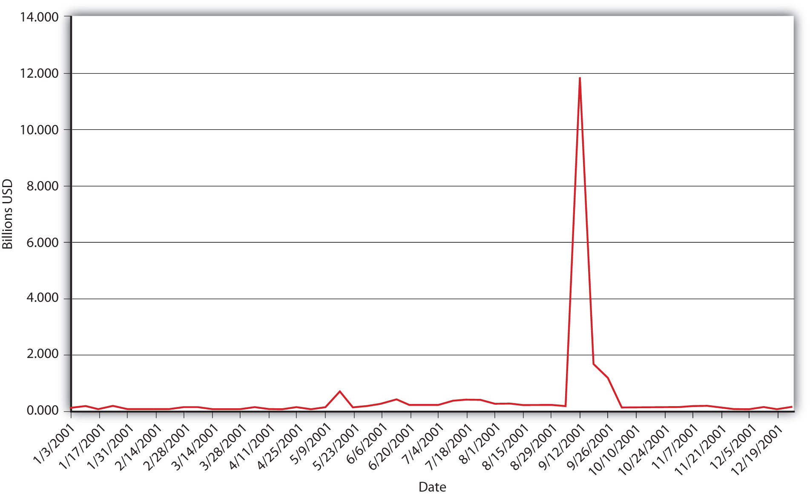

In practical terms, the Fed engages in two types of OMO, dynamic and defensive. As those names imply, it uses dynamic OMO to change the level of the MB, and defensive OMO to offset movements in other factors affecting MB, with an eye toward maintaining the federal funds target rate determined by the Federal Open Market Committee (FOMC) at its most recent meeting. If it wanted to increase the money supply, for example, it would buy bonds “dynamically.” If it wanted to keep the money supply stable but knew that a bank was going to repay a large discount loan (which has the effect of decreasing the MB), it would buy bonds “defensively.”
The responsibility for actually buying and selling government bonds devolves upon the Federal Reserve Bank of New York (FRBNY). Each trading day, FRBNY staff members look at the level of reserves, the fed funds target, the actual market fed funds rate, expectations regarding float, and Treasury activities. They also garner information about Treasury market conditions through conversations with so-called primary dealers, specialized firms and banks that make a marketBuying securities from all comers at a bid price and reselling them to all comers at a slightly higher ask price. in Treasuries. With the input and consent of the Monetary Affairs Division of the Board of Governors, the FRBNY determines how much to buy or sell and places the appropriate order on the Trading Room Automated Processing System (TRAPS) computer system that links all the primary dealers. The FRBNY then selects the best offers up to the amount it wants to buy or sell. It enters into two types of trades, so-called outright ones, where the bonds permanently join or leave the Fed’s balance sheet, and temporary ones, called repos and reverse repos. In a repo (aka a repurchase agreement), the Fed purchases government bonds with the guarantee that the sellers will repurchase them from the Fed, generally one to fifteen days hence. In a reverse repo (aka a matched sale-purchase transaction), the Fed sells securities and the buyer agrees to sell them to the Fed again in the near future. The availability of such self-reversing contracts and the liquidity of the government bond market render open market operations a precise tool for implementing the Fed’s monetary policy.
The so-called discount window, where banks come to borrow reserves from the Federal district banks, is today primarily a backup facility used during crises, when the federal funds market might not function effectively. As noted above, the discount rate puts an effective cap on ff* by providing banks with an alternative source of reserves (see Figure 16.4 "The discount window sets an upper bound on overnight interest rates"). Note that no matter how far the reserve demand curve shifts to the right, once it reaches the discount rate, it merely slides along it.
Figure 16.4 The discount window sets an upper bound on overnight interest rates
As lender of last resort, the Fed has a responsibility to ensure that banks can obtain as much as they want to borrow provided they can post what in normal times would be considered good collateral security. So that banks do not rely too heavily on the discount window, the discount rate is usually set a full percentage point above ff*, a “penalty” of 100 basis points. (This policy is usually known as Bagehot’s Law, but the insight actually originated with Alexander Hamilton, America’s first Treasury secretary, so I like to call it Hamilton’s Law.) On several occasions (including the 1984 failure of Continental Illinois, a large commercial bank; the stock market crash of 1987; and the subprime mortgage debacle of 2007), the discount window added the liquidity (reserves) and confidence necessary to stave off more serious disruptions to the economy.
Only depository institutions can borrow from the Fed’s discount window. During the financial crisis of 2008, however, many other types of financial institutions, including broker-dealers and money market funds, also encountered significant difficulties due to the breakdown of many credit markets. The Federal Reserve responded by invoking its emergency powers to create additional lending powers and programs, including the following:www.federalreserve.gov/monetarypolicy
Most of these programsblogs.wsj.com/economics/2011/08/09/a-look-inside-the-feds-balance-sheet-12/tab/interactive phased out as credit conditions returned to normal. (The Bank of England and other central banks have implemented similar programs.“Credit Markets: A Lifeline for Banks. The Bank of England’s Bold Initiative Should Calm Frayed Financial Nerves,” The Economist, April 26, 2008, 74–75.)
The financial crisis also induced the Fed to engage in several rounds of “quantitative easing” or Large Scale Asset Purchases (LSAP), the goals of which appear to be to increase the prices of (decrease the yields of) Treasury bonds and the other financial assets purchased and to influence the money supply directly. Due to LSAP, the Fed’s balance sheet swelled from less than a trillion dollars in early 2008 to almost 3 trillion by August 2011.
What in Sam Hill happened in Figure 16.5 "Total bank borrowings from the Federal Reserve System, 2001"? (Hint: The dates are important.)
Figure 16.5 Total bank borrowings from the Federal Reserve System, 2001
Terrorists attacked New York City and Washington, DC, with hijacked airplanes, shutting down the nation and parts of the financial system for the better part of a week. Some primary dealers were destroyed in the attacks, which also brought on widespread fears of bankruptcies and bank runs. Banks beefed up reserves by selling bonds to the Fed and by borrowing from its discount window. (Excess reserves jumped from a long-term average of around $1 billion to $19 billion.) This is an excellent example of the discount window providing lender-of-last-resort services to the economy.
The discount window is also used to provide moderately shaky banks a longer-term source of credit at an even higher penalty rate .5 percentage (50 basis) points above the regular discount rate. Finally, the Fed will also lend to a small number of banks in vacation and agricultural areas that experience large deposit fluctuations over the course of a year. Increasingly, however, such banks are becoming part of larger banks with more stable deposit profiles, or they handle their liquidity management using the market for negotiable certificates of deposit NCDs or other market borrowings.